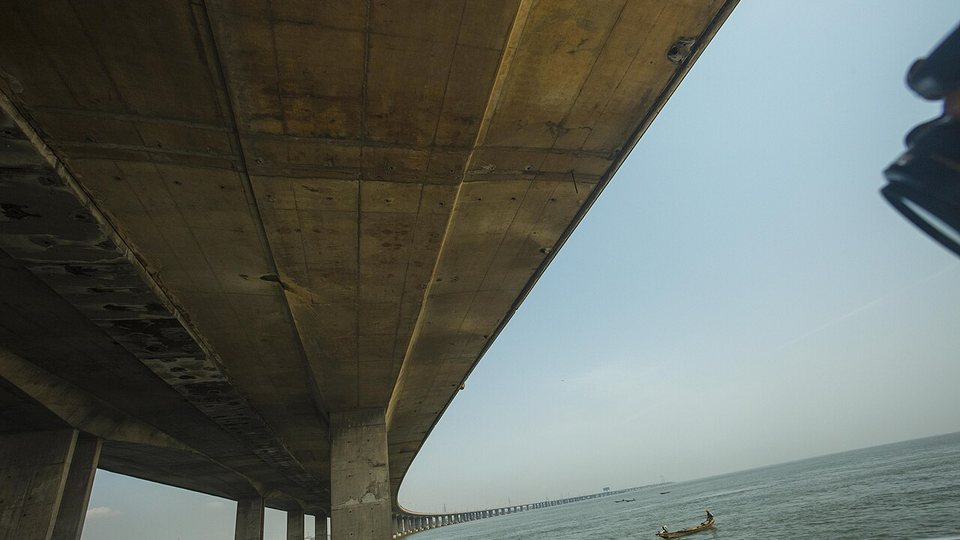
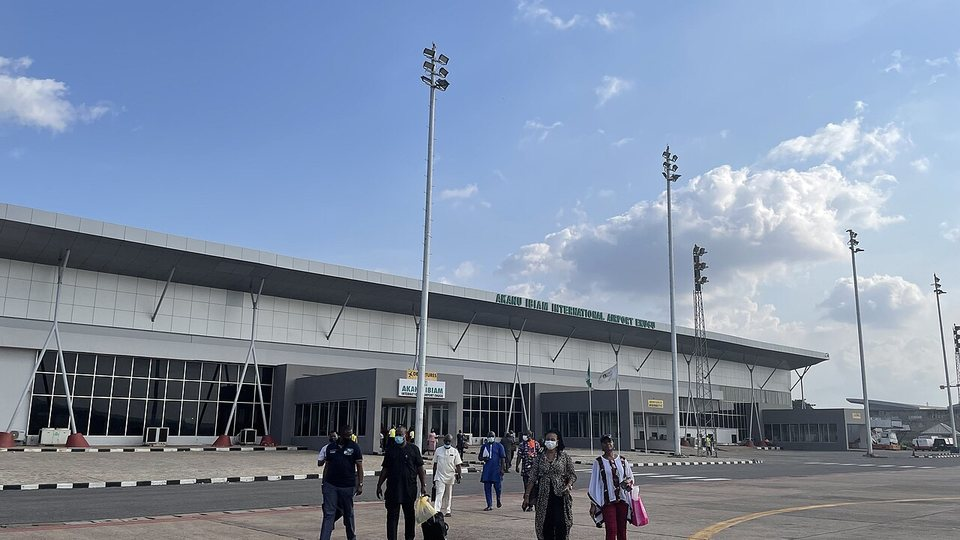

Civic education
Helping citizens understand their rights and how government works.
Citizens. Community. Accountability
We empower citizens and mobilise communities to demand transparency, responsible leadership and lasting change, and we stand behind President Bola Ahmed Tinubu's 2027 re-election.

What we do
Helping citizens understand their rights and how government works.
Speaking up peacefully for transparent, responsible leadership.
Bringing people together around common goals.
Giving young people a real voice in national life.

About the President
Bola Ahmed Tinubu trained as an accountant, served as Senator for Lagos West, was Governor of Lagos State from 1999 to 2007, and became Nigeria's 16th President in May 2023.
The full biography, education and timeline are on a dedicated page.
Read the full biographyRenewed Hope Agenda
Each page sets out the commitments in plain language, with the page of the document behind every one.
Projects

Lagos. Further rehabilitation works on the bridge were completed in 2024.
Browse the directory
Lagos. Commissioned in May 2024 and reported completed.
Browse the directory
Enugu. Concession handed over in June 2026, with rehabilitation planned.
Browse the directoryBrowse by state:
Second-term vision
The 2027 manifesto sets out what a second term will deliver, in the campaign's own words.
Read the manifesto pageFour pillars and eight priorities, quoted word for word.
Ideas supporters want debated, clearly labelled as unofficial.
City and Community Response for Good Governance (CCRGG) took part in a mega rally in Port Harcourt backing the President's re-election initiative.
Volunteer your time or help a neighbour check their voter registration. Everything is voluntary.